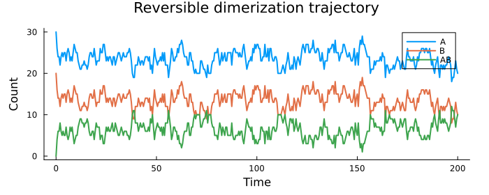

Reversible Dimerization with Gillespie Algorithm
This example demonstrates continuous-time stochastic simulation of a reversible dimerization reaction using the Gillespie algorithm:
\[A + B \underset{k_\text{off}}{\stackrel{k_\text{on}}{\rightleftharpoons}} AB\]
The Gillespie algorithm samples exact trajectories of the chemical master equation by drawing the time to the next reaction event from an exponential distribution and selecting the reaction channel proportionally to its rate.
using Random, StatsBase, Plots
using MonteCarloXSystem definition
The system state tracks molecule counts of three species. Two reaction channels are defined: association (A + B → AB) and dissociation (AB → A + B).
mutable struct ReversibleDimerModel <: AbstractSystem
A :: Int
B :: Int
AB :: Int
k_on :: Float64
k_off :: Float64
end
# propensities: rates at which each reaction fires
reaction_rates(sys::ReversibleDimerModel, t) = [
sys.k_on * sys.A * sys.B, ## association
sys.k_off * sys.AB, ## dissociation
]
function modify!(sys::ReversibleDimerModel, event::Int, t)
if event == 1 && sys.A > 0 && sys.B > 0
sys.A -= 1; sys.B -= 1; sys.AB += 1
elseif event == 2 && sys.AB > 0
sys.A += 1; sys.B += 1; sys.AB -= 1
end
return sys
endmodify! (generic function with 1 method)Parameters and initialisation
We start with 30 molecules each of A and B and no dimers. The on-rate $k_\text{on} = 0.01$ and off-rate $k_\text{off} = 0.5$ set the equilibrium dimer fraction.
sys = ReversibleDimerModel(30, 20, 0, 0.01, 0.5)
alg = Gillespie(MersenneTwister(23))
T = 200.0
println("Initial state: A=$(sys.A), B=$(sys.B), AB=$(sys.AB)")
println("k_on = $(sys.k_on), k_off = $(sys.k_off)")Initial state: A=30, B=20, AB=0
k_on = 0.01, k_off = 0.5Simulation
step! draws the next event time from the Gillespie distribution and returns the event index. Measurements are recorded before modify! so that each sample reflects the state during the inter-event interval.
measurement_times = collect(0.0:0.5:T)
measurements = Measurements([
:A => (s -> s.A) => Int[],
:B => (s -> s.B) => Int[],
:AB => (s -> s.AB) => Int[],
], measurement_times)
measure!(measurements, sys, alg.time) ## record initial state
while alg.time <= T
t_new, event = step!(alg, t -> reaction_rates(sys, t))
measure!(measurements, sys, t_new) ## before modify!
modify!(sys, event, t_new)
end
println("Final time : ", round(alg.time; digits=2))
println("Final state : A=$(sys.A), B=$(sys.B), AB=$(sys.AB)")
println("Total events : ", alg.steps)Final time : 200.23
Final state : A=19, B=9, AB=11
Total events : 1313Trajectory
The system reaches a dynamic equilibrium in which molecules continuously associate and dissociate. The sum A + B + 2·AB is conserved throughout.
A_t = measurements[:A].data
B_t = measurements[:B].data
AB_t = measurements[:AB].data
plot(measurement_times, A_t; lw=2, label="A",
xlabel="Time", ylabel="Count",
title="Reversible dimerization trajectory",
size=(700, 280), margin=5Plots.mm)
plot!(measurement_times, B_t; lw=2, label="B")
plot!(measurement_times, AB_t; lw=2, label="AB")
Equilibrium statistics
Time-averaged counts after the system has equilibrated. The law of mass action predicts $\langle AB \rangle / (\langle A\rangle\langle B\rangle) = k_\text{on}/k_\text{off}$.
t_eq = T / 4 ## discard first quarter as transient
i_eq = searchsortedfirst(measurement_times, t_eq)
A_eq = mean(A_t[i_eq:end])
B_eq = mean(B_t[i_eq:end])
AB_eq = mean(AB_t[i_eq:end])
ratio_sim = AB_eq / (A_eq * B_eq)
ratio_exact = sys.k_on / sys.k_off
println("Time-averaged counts (t > $(t_eq)):")
println(" ⟨A⟩ = ", round(A_eq; digits=3))
println(" ⟨B⟩ = ", round(B_eq; digits=3))
println(" ⟨AB⟩ = ", round(AB_eq; digits=3))
println("Mass-action ratio — simulation: ", round(ratio_sim; digits=4),
" exact: ", round(ratio_exact; digits=4))Time-averaged counts (t > 50.0):
⟨A⟩ = 23.542
⟨B⟩ = 13.542
⟨AB⟩ = 6.458
Mass-action ratio — simulation: 0.0203 exact: 0.02This page was generated using Literate.jl.